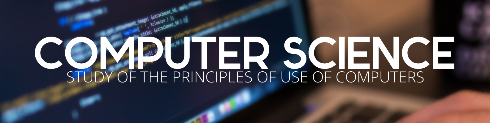

 South Forsyth HS
South Forsyth HS
CAREER AND TECHNICAL EDUCATION
South Forsyth HS South Forsyth HS AP Computer Science A
Intro to Digital Technology
Computer Science Principles
Programming, Games, Apps, and Society
IB Computer Science SL
The goal of this course is to provide all students with an introduction to the principles of computer science and its place in the modern world. This course should help students to use computers effectively in their lives, thus providing a foundation for successfully integrating their own interests and careers with the resources of a technological society. In this course, high school students can acquire a fundamental understanding of the operation of computers and computer networks and create useful programs implementing simple algorithms. By developing Web pages that include images, sound, and text, they can acquire a working understanding of the Internet, common formats for data transmission, and some insights into the design of the human-computer interface.
Computer Science (CS) Principles is an intellectually rich and engaging course that is focused on building a solid understanding and foundation in computer science. This course emphasizes the content, practices, thinking and skills central to the discipline of computer science. Through both its content and pedagogy, this course aims to appeal to a broad audience. The focus of this course will fall into these computational thinking practices: connecting computing, developing computational artifacts, abstracting, analyzing problems and artifacts, communicating, and collaborating.
The course is designed for high school students to strategize, design, and develop games and mobile and desktop applications that can be produced in the real world. Students will learn about life-cycles of project development and use models to develop applications. Attention will be placed on how user interfaces affect the usability and effectiveness of a game or an application. Programming constructs will be employed which will allow students’ applications to interact with “real world,” stimuli. The course exposes students to privacy, legality, and security considerations with regards to the software industry.
AP Computer Science A (AP CS-A) is an introductory course in computer science. It is both a college preparation course for potential computer science majors and a foundation course for students planning to study in other technical fields such as mathematics, engineering, physics, and chemistry, just to name a few. Even some “non-technical” fields such as business and psychology require students to take an entry-level programming course. Students enrolled in this course are expected to take the Advanced Placement examination in AP CS-A in May. Students who elect not to sign up to take one of these exams will take an equivalent exam in class that will count towards the final grade.
Computer science requires an understanding of the fundamental concepts of computational thinking as well as knowledge of how computers and other digital devices operate. The Diploma Programme computer science course is engaging, accessible, inspiring and rigorous. It has the following characteristics. Draws on a wide spectrum of knowledge, Enables and empowers innovation, exploration and the acquisition of further knowledge, Interacts with and influences cultures, society and how individuals and societies behave, Raises ethical issues, and s underpinned by computational thinking